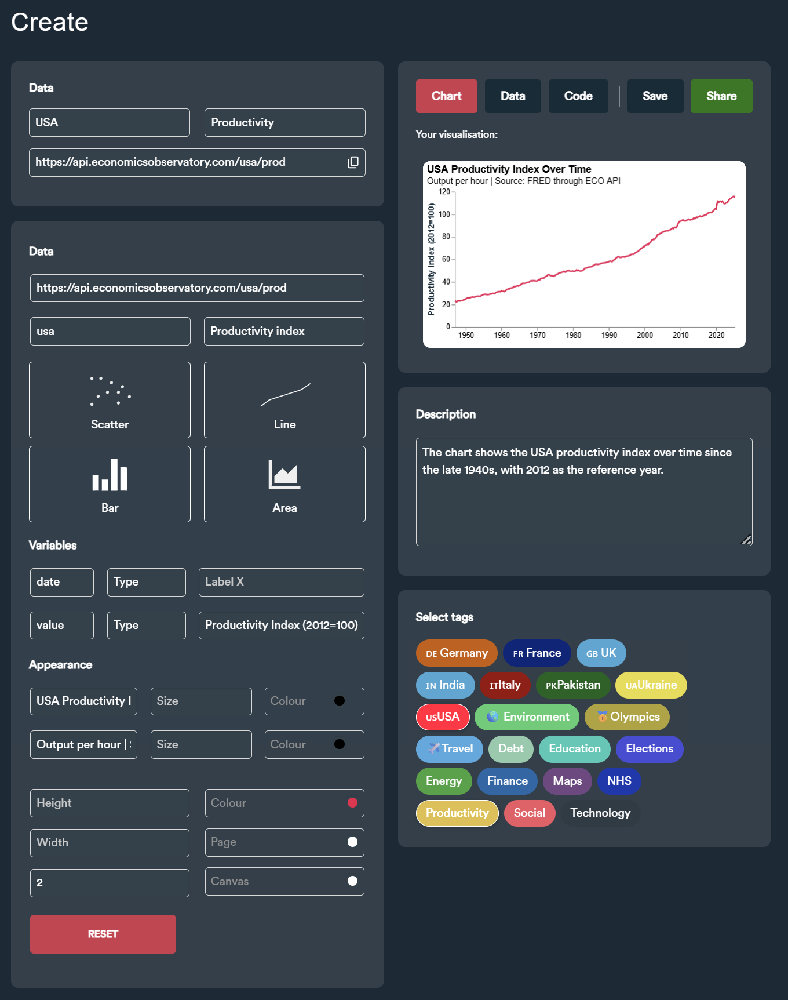
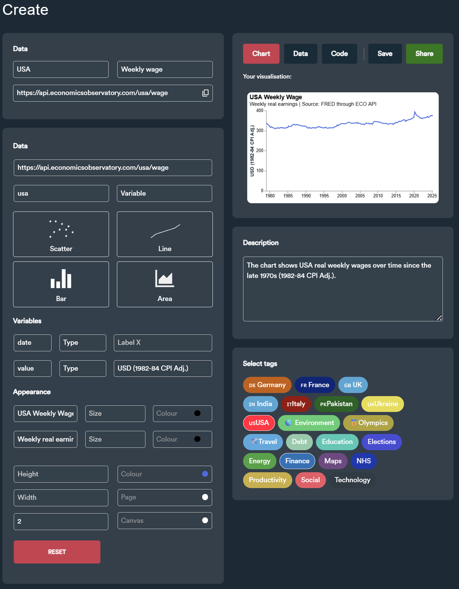

We've organised the page into sections, with each section containing a chart, title and a description. Here, we can describe the chart and give some context. As a first example, we're using a basic chart from our repo.
We've organised the page into sections, with each section containing a chart, title and a description. Here, we can describe the chart and give some context. As a first example, we're using a basic chart from our repo.
The chart shows the USA productivity index over time since the late 1940s, with 2012 as the reference year. It was built using the "Create" tool from the Economics Observatory (see specifications).
The chart shows the USA real weekly wage over time since the late 1970s (1982-84 CPI Adj.). It was built using the "Create" tool from the Economics Observatory (see specifications).
In this graph I combined two data series obtained through the World Bank API. Even though they were on different scales, I made sure that both axes were aligned so that, for example, the number 3 on the Fertility Rate axis corresponds to the number 30,000 on the GDP per Capita axis. I formatted the GDP per Capita numbers to use a "," as a thousands separator, including those in the tooltip.
In this chart I plotted the same series obtained through the World Bank API for various countries. Given that the chart looks a bit crowded, I added the functionality to isolate a line by clicking on it using a condition inside the opacity property. Unfortunately, this functionality from VegaLite does not appear to function so well on a mobile browser.